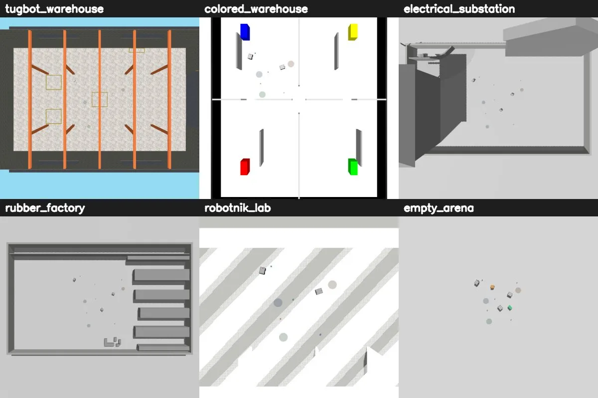
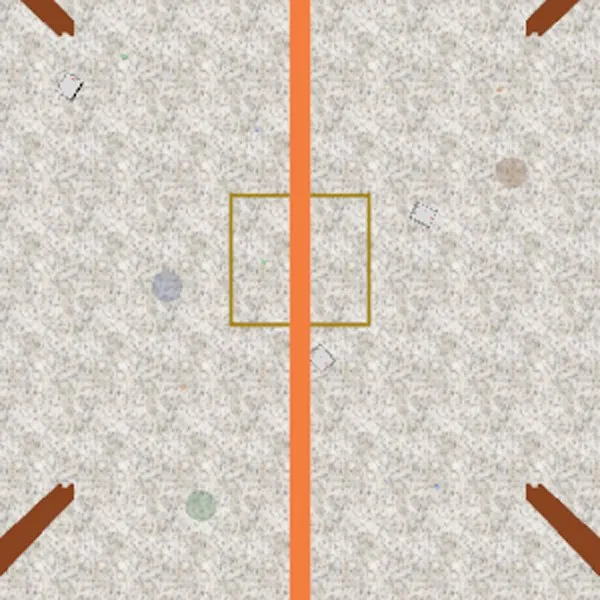
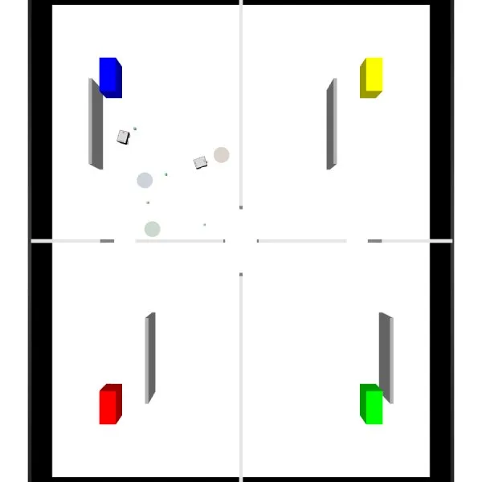
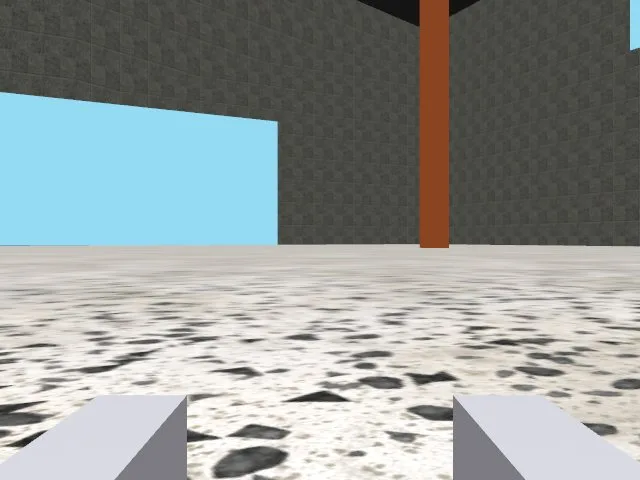
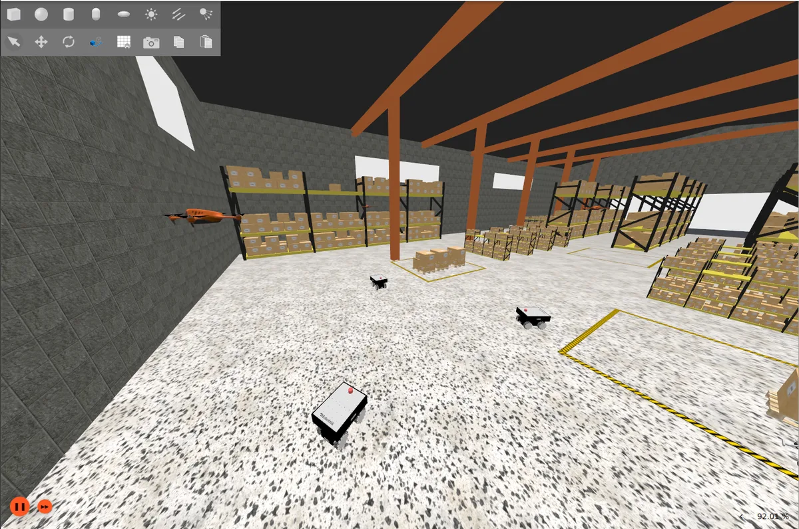

Swarmbots: Summit XL Swarm that Sorts Trash by Color
A ROS 2 Jazzy + Gazebo Harmonic simulation of mecanum Summit XLS robots with grippers and RGB-D cameras that pick up trash and deliver it to the depot of its color. The classic pipeline works; the goal is to record demonstrations and train an ACT imitation-learning policy.
Code and docs on GitHub → swarmbots

01Context
Part of a collaborative robotics research project at PUCP. A swarm of omnidirectional (mecanum) Summit XLS robots, each with a two-finger gripper and an RGB-D camera, collects trash boxes and delivers each one to the depot of its color. I work on the simulation side. The end goal is to record demonstrations and train an ACT (Action Chunking Transformer) policy that does the task by itself.
02Collection cycle
Each robot loops seek → align → grasp → deliver → release, and every transition waits for a real confirmation:
- A centralized greedy planner assigns each free robot the closest unclaimed piece.
- Navigation with potential fields (goal attraction + LiDAR repulsion), using mecanum strafing to dodge.
- Close to the piece, the depth camera takes over to center it and slide it between the fingers.
- The grasp is physical (a
DetachableJointcreated where the piece already is, confirmed by ACK). While carrying, other pieces are published as virtual obstacles so the robot does not sweep them. - Only one robot unloads per depot at a time; the rest wait outside its LiDAR range.
03Status
| Humble/Fortress → Jazzy/Harmonic migration | Validated (RTF ≈1.0) |
|---|---|
| Random, seeded scenario | Validated |
| Classic pick-up cycle | Validated in tugbot_warehouse: 1 robot 6/6, 3 robots 6/6, 0 collisions |
| Color sorting and depot turn-taking | Validated (color 4/4, 0 collisions) |
| 6 worlds | Load without errors, RTF 0.85–1.0 |
| rosbag → HDF5 for ACT | Validated with a synthetic test; needs a real bag |
| Record demos and train ACT | Next step |




04Data for ACT
Demonstrations are recorded with a PS5 controller and converted with bag_to_act_hdf5.py into ACT/ALOHA-format episodes: qpos = [yaw, gripper width] (egocentric, so one policy can be shared across robots), action = [vx, vy, ωz, grasp] at 15 Hz, with front and overhead images.